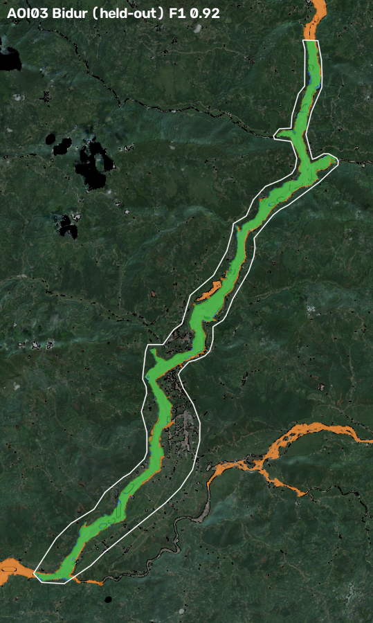
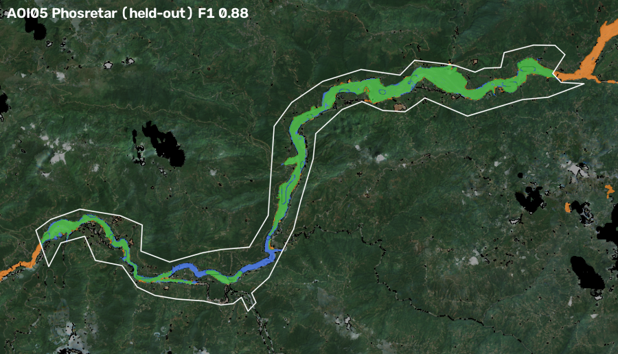
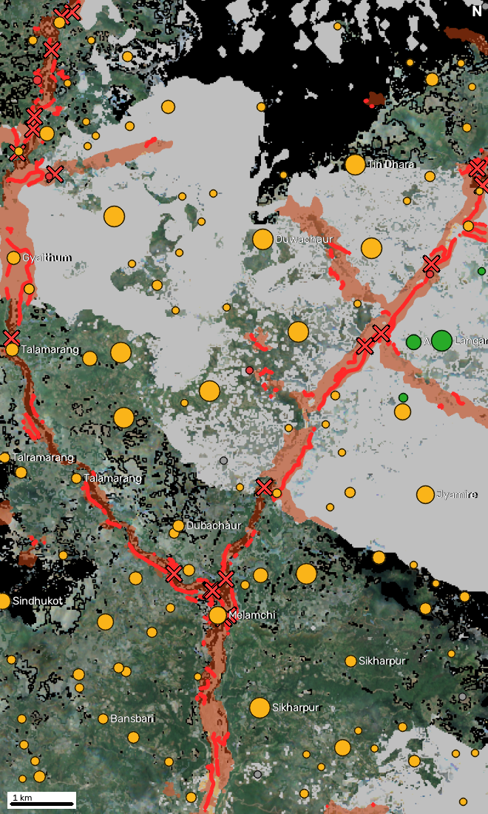
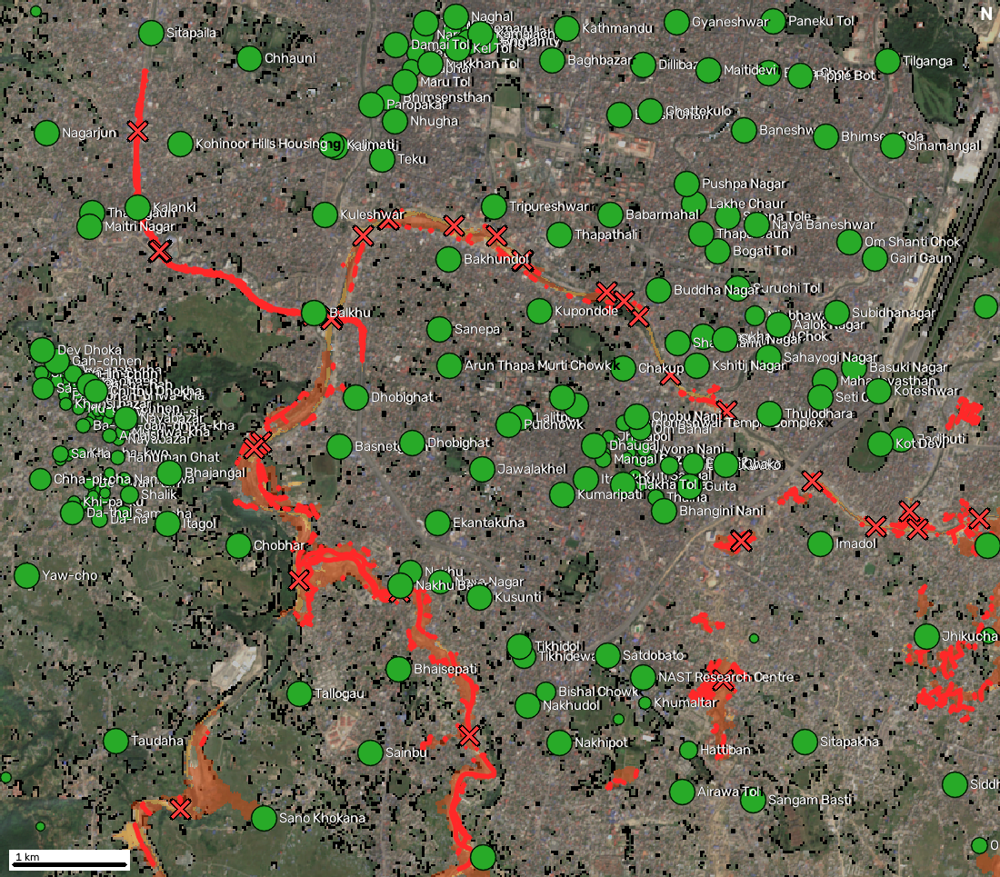
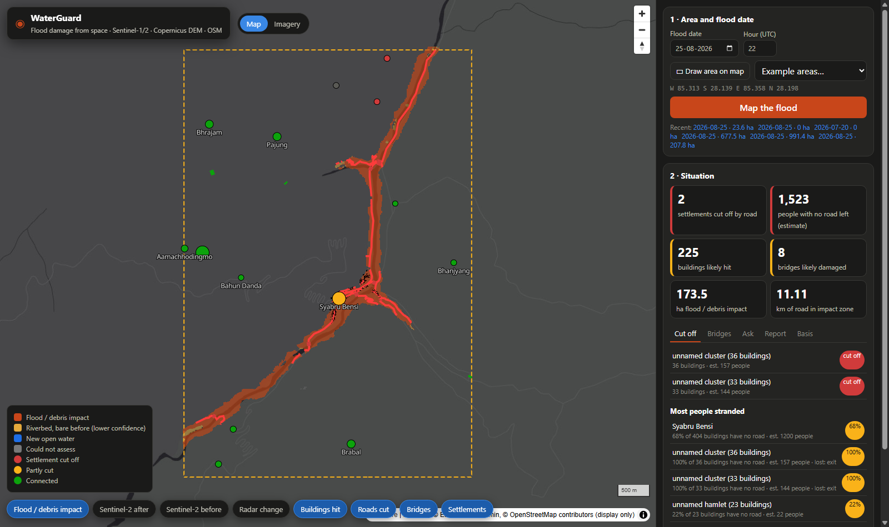

Adil Mahajan. Code: see README. Case study: Bhote Koshi–Trishuli glacier-outburst flood, Nepal, 25/26 Aug 2026 (Copernicus EMS EMSR927).
When roads, bridges and phone lines fail, rescuers need three answers fast: where the flood hit, what it damaged and who is cut off. WaterGuard answers them for any area and date, from free satellite data only:
| Input | Source | Role |
|---|---|---|
| Sentinel-1 RTC (VV, VH) | Microsoft Planetary Computer (Meru Labs fallback) | change detection, all orbit tracks |
| Sentinel-2 L2A | Planetary Computer | change detection where clear |
| Copernicus DEM GLO-30 | Planetary Computer | HAND, slope, layover/shadow, flow paths |
| OpenStreetMap, snapshot 24 h before the event | ohsome API v2 (HeiGIT) | buildings, roads, bridges, places, health facilities |
EMS maps are used only to score results (waterguard/validate.py, never imported by the pipeline). Each run audits its OSM snapshot: it fails if any feature was edited after the snapshot time (case study: 0 edited; latest edit in snapshot 26 Jul 2026). No training dataset is used (we chose the copilot as the AI component).
3.1 Terrain. GLO-30 is hydrologically conditioned (least-cost breaching) with WhiteboxTools. We derive D8 flow directions, a stream network (≥ 2 km² upstream area), HAND (height above nearest drainage), slope and aspect.
3.2 Radar change (Sentinel-1). For every orbit track with an image after the event, the first post-event image is compared with up to five earlier images of the same track (same viewing geometry, 12-day repeat), as recommended for SAR change detection. After 5×5 multilooking (OpenCV), each pixel gets a z-score |post − mean(pre)| / std(pre), with a 0.75 dB std floor. Pixels that normally fluctuate need a bigger change to count. Debris can brighten (boulders) or darken (mud, water), so the absolute value is used. Pixels in layover or shadow for that track, predicted from slope/aspect and the pass direction, are excluded. Tracks and polarisations are averaged. Open water is VV < −18 dB and VH < −25 dB.
3.3 Optical change (Sentinel-2). Monsoon cloud rarely leaves a clean scene, so we build per-pixel cloud-free median composites from the Scene Classification Layer over 45 days before and 40 days after the event. Reflectance is harmonised for processing baseline ≥ 04.00. Stripped vegetation shows as NDVI loss and new water or wet sediment as NDWI gain.
3.4 Fusion (OpenCV). A pixel is impacted if it is on the valley floor (HAND ≤ 80 m) and shows change: optical where both composites are clear, radar elsewhere (smoothed |z| ≥ 1.0). Then come morphological opening/closing, a rule that patches must touch the river channel (a flood arrives from the river, not mid-slope) and a 2 ha minimum. Clear-sky ground that is bare or water after the event and connected to ≥ 5 ha of detected change is added. This captures the riverbed and gravel bars the surge ran through, which had no vegetation to lose. Ground that was bare before the event too, added only by this connectivity, is kept as a separate lower-confidence riverbed class.
3.5 Damage. A building, bridge or health facility is likely affected if it intersects impact and possibly affected within 20 m. We also report road length inside impact, by class.
3.6 Who is cut off. OSM roads become a graph (every vertex a node, so mid-way junctions count) for two networks: vehicle (motorable roads and tracks) and foot (plus paths, which matter in the hills). Impacted segments and likely-damaged bridges are removed. Destinations are towns/cities, health facilities and road exits at the area's edge. Settlements are OSM places plus clusters of ≥ 8 buildings without a named place, so unmapped hamlets count. Each settlement is tested through up to 25 of its own buildings, each snapped to its nearest road, so one flooded junction next to the place's map point cannot strand a whole suburb. A settlement is cut off if none of its buildings can reach any destination after the flood, and partly cut if some can't or it lost a destination type. We report the share of its buildings with no road left and people stranded = people × that share. We also compute road distance to the nearest health facility before and after. People = buildings × 4.37 (Nepal 2021 census household size), always labelled as an estimate.
3.7 Flood path (bonus). From any clicked point, snapped to the nearest stream, we follow D8 steepest descent downstream and list settlements within 400 m of the path whose lowest part is ≤ 80 m above the river, ordered by distance. Times use an assumed 4 m/s surge and are labelled as such.
3.8 AI component: situation-report copilot. An LLM (Amazon Bedrock, default Amazon Nova Pro; or any OpenAI-compatible model) with six read-only tools over the run's results. Rules: answer in the user's language (English/Nepali) and copy every number from a tool result. A verifier extracts every number from the draft (ASCII or Devanagari digits) and checks it against the tool results of that conversation. On failure the model gets one retry naming the bad numbers; numbers that still fail are masked [unverified] and flagged in the UI. Without an LLM, a deterministic router answers the common questions from the same tools. The one-page report is template-based, so its numbers are exactly the pipeline's.
EMS delivered maps for four areas (AOI01 Syapru Besi, AOI02 Timure, AOI03 Bidur, AOI05 Phosretar; AOI04/06 were cancelled for cloud). EMS mapped the event as debris-flow/landslide footprints ("observed event"), plus graded building and bridge damage from very-high-resolution optical imagery. We score inside each AOI, excluding EMS "not analysed" areas.
Honest protocol. Thresholds were tuned on AOI01 + AOI02 only. AOI03 and AOI05 are held out. The patch-size limits were set with false-alarm tests that use no EMS data: a placebo date (2 ha minimum patch) and an unaffected control tributary, Tadi Khola (5 ha minimum seed for riverbed growth; with 2 ha seeds, growth ran up Tadi's pre-existing gravel bed, 180 ha of false impact). As a baseline we mark the whole valley floor (HAND ≤ 80 m) as hit. This shows how much the satellite change evidence adds, since EMS AOIs are drawn tightly around the damaged valley.
| EMS area | Split | EMS impact (ha) | Ours (ha) | Precision | Recall | F1 | IoU | Valley-only baseline F1 |
|---|---|---|---|---|---|---|---|---|
| AOI01 Syapru Besi | tuning | 111.1 | 108.4 | 0.95 | 0.93 | 0.94 | 0.89 | 0.86 |
| AOI02 Timure | tuning | 129.4 | 109.6 | 0.98 | 0.83 | 0.90 | 0.81 | 0.89 |
| AOI03 Bidur | held-out | 701.4 | 775.7 | 0.88 | 0.97 | 0.92 | 0.85 | 0.56 |
| AOI05 Phosretar | held-out | 639.3 | 555.6 | 0.95 | 0.82 | 0.88 | 0.79 | 0.53 |
| EMS area | EMS damaged/destroyed building points on our impact map | Destroyed | Damaged | Possibly damaged | EMS damaged bridges: in pre-event OSM / flagged by us |
|---|---|---|---|---|---|
| AOI01 | 404/433 (93%) | 322/323 | 31/32 | 51/78 | 5 / 5 of 5 |
| AOI02 | 394/431 (91%) | 360/372 | 26/33 | 8/26 | 0 / 0 of 1 |
| AOI03 | 2918/3058 (95%) | 2473/2479 | 234/246 | 211/333 | 20 / 20 of 24 |
| AOI05 | 567/763 (74%) | 358/397 | 93/116 | 116/250 | 13 / 11 of 17 |
Do the results depend on the EMS calibration? Hardly. With the thresholds written before any EMS label was looked at (HAND ≤ 60 m, NDVI drop 0.10, radar |z| ≥ 1.1, 15 px smoothing) plus the riverbed rule, F1 on AOI01/02/03/05 is 0.89 / 0.80 / 0.92 / 0.86, against 0.94 / 0.90 / 0.92 / 0.87 tuned (same cached features). The riverbed rule is the part that matters (without it: 0.83 / 0.53 / 0.85 / 0.54). It has a physical basis: a debris-flow channel is bare ground after the event, whether or not it was vegetated before. EMS maps never enter a run: they are read only by validate.py.


Held-out areas. Green = mapped by both, orange = only WaterGuard, blue = only EMS, white = EMS area outline. Orange outside the outline is outside what EMS analysed (e.g. the Tadi Khola, bottom right in Bidur: see Limitations).
False-alarm tests (should map ~nothing):
| Test | Area (km²) | Impact mapped (ha) | of which riverbed, lower confidence (ha) | Buildings likely affected | Bridges likely damaged |
|---|---|---|---|---|---|
| placebo date (Syapru Besi, 20 Jul 2026) | 29.8 | 0.0 | 0.0 | 0 | 0 |
| control valley (Langtang Khola, real event date) | 44.8 | 0.0 | 0.0 | 0 | 0 |
| control tributary (Tadi Khola, real event date) | 103.5 | 23.6 | 0.0 | 0 | 0 |
Copilot evaluation (scripts/eval_copilot.py, Amazon Nova Pro on Bedrock, Syapru Besi run, 13 questions: 9 English, 4 Nepali; transcript in docs/copilot_eval.json). 13 of 13 answers fully verified (106 numbers), no retries. In an earlier run, one answer (a 5-line situation report) multiplied buildings by household size on its own. The verifier rejected the number, the retry repeated it and it was masked as [unverified], so no invented figure reached the user. The pipeline now computes that figure itself (people_est_in_likely_affected_buildings). Asked "How many people died?", the copilot says the maps contain no casualty data and gives no number. Each answer takes 2–7 s.
Another event, untouched by tuning: Melamchi flood, 15 Jun 2021. We ran the same code, with no changes, on a different year, catchment and Sentinel-2 processing baseline (bbox 85.54–85.62 E, 27.80–27.92 N; 266 s cold). It mapped 954 ha of impact, 855 buildings likely affected and 20 bridges likely damaged. Melamchi Bazar, the town devastated in that flood, loses road access to its health post (12 km before, no route after), with 56% of its buildings left without a road. The first post-event radar image was 20 Jun 2021, five days after the flood. We have no EMS-style reference for this event, so this check is qualitative.
A flat, urban flood: Kathmandu Valley, 27–28 Sep 2024. This is the opposite of a Himalayan gorge, and it exposed two weaknesses that we fixed before freezing the code. First, roofs and streets are "bare" in Sentinel-2, so riverbed growth ran through the city (1,062 ha, 34,502 buildings "hit"). Pre-event OSM building footprints now block riverbed growth: 281 ha, along the Bagmati, Nakkhu, Balkhu and Manohara, the rivers that overflowed. Second, one flooded junction next to a place's map point stranded whole suburbs (Balkhu, Kalanki). The building-sampled cut-off test (3.6) fixed that: no settlement is cut off in the redundant city grid, and about 8,300 people's buildings lost road access, mostly near the Manohara. Both fixes cost a little on the EMS areas (Phosretar destroyed-building recall 96% → 90%). We kept them, because a judge's area can be anywhere.



The dashboard (python -m waterguard.server) takes a drawn box and a date and shows progress, then layers: impact, Sentinel-2 before/after, radar change, buildings hit, roads cut, bridges, and settlements coloured by road status. A side panel has the situation tiles, cut-off and bridge lists, the copilot, the one-page report (EN/NE), the flood-path tool and a Basis tab. That tab lists every satellite image used and the OSM audit.
Contains modified Copernicus Sentinel data 2026. Produced using Copernicus WorldDEM-30 © DLR e.V. 2010–2014 and © Airbus Defence and Space GmbH 2014–2018 provided under COPERNICUS by the European Union and ESA; all rights reserved. © OpenStreetMap contributors (ODbL), via the ohsome API (HeiGIT). Validation only: European Union, Copernicus Emergency Management Service data (EMSR927). Lindsay, J. B. (2016), Whitebox GAT, Computers & Geosciences 95. Nobre, A. D. et al. (2011), HAND, J. Hydrology 404. National Statistics Office Nepal (2021), National Population and Housing Census 2021 (average household size 4.37).